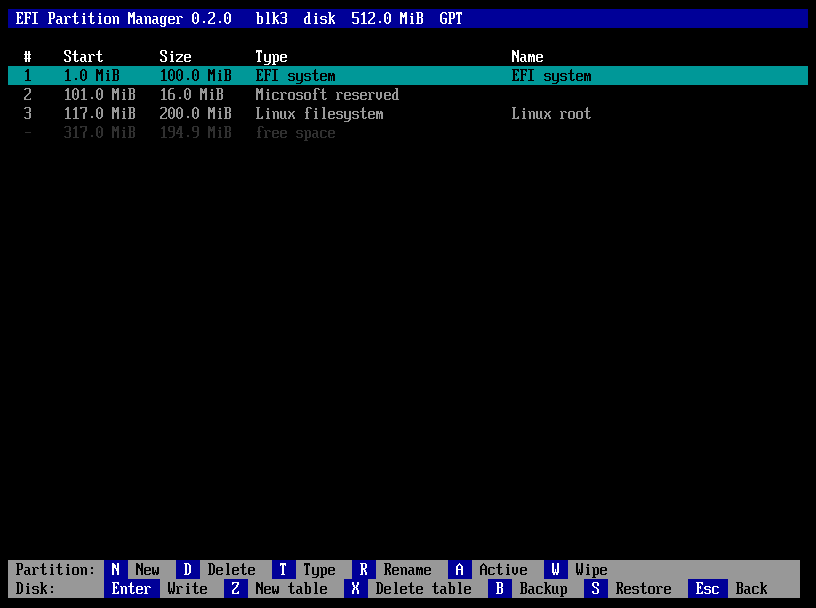
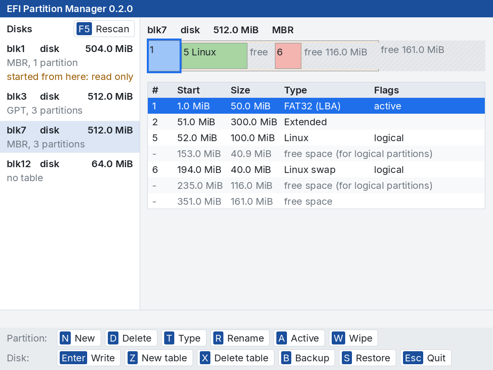

![EFI Partition Manager]()
Introduction and concepts
1.1 · What EFI Partition Manager is
EFI Partition Manager is a partition manager for UEFI firmware in one file, partmgr.efi. It reads and writes GPT and MBR partition tables — MBR complete, with extended and logical partitions — shows every change before it is written, backs tables up to a file and restores them, and wipes partitions. With a graphics screen it opens a window made for the mouse and the keyboard; without one it shows full-screen text screens.
The user manual explains what partmgr does. This manual explains how: after reading it you should be able to find your way in every source file, build and test partmgr, and change the way it reads or writes tables without breaking a disk. The reasons behind the design are recorded, decision by decision (P1–P25), in docs/decisions-and-history.md; this manual cites them by number.
1.2 · Design principles
- The table code knows no firmware. Reading, changing and writing tables (
ptable.c,ptedit.c,ptwrite.c) reach the disk only through a read and a write function (PtDev). The same code runs on a UEFI block device and, in the tests, on a disk image file, wheresfdiskandpartedcheck every table it writes (P15). - Nothing is written until Write. Every change is made on a
PtTablein memory; onlypt_write,pt_restoreandpt_wipewrite to a disk. Restore and wipe run at once, each after its own warning (P7). - Protection at the lowest level. The disk partmgr was started from, and a write-protected one, get no write function at all: no mistake in the interface can write them (P8).
- Only the table — or a wipe. The blocks partmgr writes are the MBR, the extended boot records and the GPT headers and arrays. The only write inside a partition is a wipe, of exactly that partition's blocks.
- Damage is shown, not hidden. A damaged table is read as far as possible and explained with notes; writing a table always writes a clean and complete one.
- No EDK2 code. Own UEFI definitions, runtime, platform layer and build tools; the ordinary Linux GCC and ld build the image.
- Two interfaces, one set of actions. The window and the text screens call the same function for every action, with the same questions, checks and messages (2.4).
1.3 · Subsystems at a glance
The sources are organised in a few directories. This is the map the manual follows chapter by chapter:
- src/partmgr/ptable.c, ptedit.c, ptwrite.c, units.c
- The portable table code: reading, changes in memory and free space, writing, backup and restore, wipe; sizes as the user writes them (Chapters 5–10).
- src/partmgr/disks_efi.c
- The disks of the machine through the firmware's Block I/O protocol (Chapter 11).
- src/partmgr/main.c, diskview.c, view.c, ui.c
- The program: the list of disks, the screen of a disk and its actions, dialogs on the text console (Chapter 11).
- src/partmgr/gui.c, gfx.c, font_inter.*
- The graphical window, the drawing code and the embedded glyphs of the Inter font (Chapter 12).
- src/pal/
- The platform layer: entry point, console, time, files and volumes, the graphics screen, the serial port, the pointer and partmgr's own USB mouse driver (Chapters 4 and 13).
- src/lib/, include/
- The freestanding C runtime and the UEFI definitions (Chapter 4).
- tools/
- The ELF → PE32+ converter, the linker script, the documentation, font and screenshot tools, the setup script (Chapters 3 and 16).
- tests/partmgr/
- The Linux test tools, the table tests, the drawing checks and the QEMU test (Chapter 14).
1.4 · The project in numbers
| Area | Directory | Lines | Content |
|---|---|---|---|
| partmgr | src/partmgr | 7,247 | table code, the UEFI program, the screens; the count includes the glyph file font_inter.bin |
| Platform layer | src/pal | 1,654 | console, keys, time, files, volumes, screen, pointer, entry point |
| Runtime | src/lib | 1,003 | libc subset, printf, string buffer, UTF-8, CRC-32 |
| UEFI definitions | include | 744 | the UEFI types and protocols partmgr uses |
| Tools | tools | 747 | ELF→PE converter, linker script, documentation and font tools, screenshots, setup and backup scripts |
| Tests | tests/partmgr | 2,199 | the Linux test tools, the table tests, the drawing checks, the QEMU test |
make docs)partmgr.efi is about 800 KB (802,816 bytes for 0.2.1), of which 698 KB are the glyphs of the font. The line counts here and in the source file map are not typed by hand: make docs (tools/gen-docs.py) counts the files and writes them into this page, and make test fails when they no longer match the tree — a new source file without a row in the map fails as well.
General architecture
2.1 · The layers
partmgr is a single UEFI application with no command line and no scripting (P1). Its code falls into three layers: the program, which is UEFI only; the table code, which is portable; and the platform layer, the only code besides disks_efi.c that talks to the firmware.
| Layer | Responsibility | Main files |
|---|---|---|
| The program | The window or the text screens, the actions, the dialogs, the list of disks | main.c, gui.c, diskview.c, view.c, ui.c, gfx.c |
| Table code | Reading, changing, writing tables; backup, restore, wipe; sizes | ptable.c, ptedit.c, ptwrite.c, units.c |
| Disks | Whole disks through Block I/O, the boot disk made read-only, random numbers | disks_efi.c |
| Platform layer | Entry point, console, keys, time, files, volumes, graphics, serial port, pointer | src/pal/* |
| Runtime | The C subset every module includes | src/lib/*, include/efi.h |
2.2 · Start-up and exit
efi_main(pal_efi.c) setsgImage,gST,gBS,gRTandgLoadedImage, turns the watchdog off, takesSimpleTextInputExfrom the console input handle when it exists, remembers the console's colours, calibrates the clock, finds the volumes and the arguments, allocates 1 MiB of pages and callsapp_mainon that private stack (UEFI only guarantees 128 KiB); if the pages cannot be had,app_mainruns on the firmware's stack.app_main(main.c) callspm_guifirst, before any change of the text mode, which on some firmware changes the screen too.pm_guireturns false, with nothing changed, when the embedded glyphs fail their check orpal_gfx_openfinds no graphics screen of at least 640 × 480 (P18).- Without a window,
app_mainswitches the console to the narrowest text mode of at least 100 columns and 25 rows, if the firmware has one (pal_con_wide_mode, P17), hides the cursor and loops on the list of disks. - On exit the text screens reset the colours, clear the screen, put back the text mode partmgr found (only if they changed it) and turn the cursor on; the window gives the screen back with
pal_gfx_close.efi_maincalls the exit hook, resets the colours and returnsEFI_SUCCESS, and the firmware goes on.
pal_argc/pal_argv are always valid.2.3 · The life of a change
Every change follows the same path: dialogs collect the input, one pt_* call changes the table in memory or returns a message, the rows are built again and the screen shows the table as it will be, with a star on what changed. Only Write, restore and wipe reach the disk, each after a red question answered with Y.
2.4 · Two interfaces, one set of actions
The window does not have actions of its own. Every action key — and every click on an action button, which is that key — goes to pm_disk_action in diskview.c, the function the text screen of a disk calls too. Two hooks make the same code draw on the window:
- ui_dialogs (ui.h)
- A table of four functions. When it is set,
ui_message,ui_yesno,ui_inputandui_menucall the window's dialogs instead of drawing boxes on the text console.pm_guisets it on entry and clears it on exit. - pm_screen (view.h)
- A
PmScreen:redrawdraws the window where the text screen would draw itself before a dialog,wipedraws the progress of a wipe,wipe_stopreports a request to stop it.NULLmeans the text screen. - View (view.h)
- One disk as both interfaces show it: the disk, its
PtTable, the rows (partitions and free areas merged by start), the selection and the message line (A.3).
Build and tools
3.1 · Tools needed
| Tool | Used for |
|---|---|
| GCC (x86-64), GNU ld, Python 3 | The build. No cross-compiler: the image is linked as an ELF shared object and converted. |
sfdisk (fdisk) | The table tests: it builds the test images and is the reference. |
parted | A second reader of the tables partmgr writes (the check is skipped without it). |
mkfs.fat (dosfstools) | A disk without a table, and the writable volume of the QEMU test. |
| QEMU and OVMF | make qemu-test and tools/screenshots.py. OVMF= selects the firmware image (default: /usr/share/ovmf/OVMF.fd or /usr/share/OVMF/OVMF.fd). |
| Pillow, with FreeType and Raqm | Only make font, which renders the glyphs again; the build uses the committed font_inter.bin. |
On Debian or Ubuntu, tools/setup-dev.sh says which packages are missing and, with --install, installs them with apt (3.7).
3.2 · Make targets
| Target | Does |
|---|---|
make | Builds build/partmgr.efi and prints its size. |
make test | Builds build/tests/pttool and build/tests/gfxtool, runs the table tests (run-tests.py), the drawing checks (gfxtool check) and the check of this manual (gen-docs.py --check). |
make qemu-test | Builds partmgr.efi, build/tests/gfxdemo.efi and gfxtool, and runs tests/partmgr/qemu-test.py. |
make docs | Rewrites the line counts of this manual. |
make font | Runs tools/gen-font.py: downloads Inter 4.1 (checked against its SHA-256) and renders src/partmgr/font_inter.bin. |
make build/tests/partmgr-text.efi | partmgr built with -DPARTMGR_TEXT_ONLY, without the window: for the pictures of the text screens only. |
make clean | Removes build/. |
make test | tail reports the exit status of tail and hides a failure.3.3 · What is linked
The Makefile lists the sources in groups. TABLE_SRC is the portable table code, also compiled into the Linux test tool; GFX_SRC is the drawing code of the window with its font and its platform part (the screen and the pointer); EFI_SRC is everything partmgr.efi contains:
TABLE_SRC := src/partmgr/ptable.c src/partmgr/ptedit.c src/partmgr/ptwrite.c src/partmgr/units.c \
src/lib/crc32.c src/lib/util.c
PAL_SRC := src/lib/libc.c src/lib/fmt.c src/lib/util.c src/lib/crc32.c src/pal/pal_efi.c src/pal/pal_common.c
# the drawing code of the graphical interface, its font, the screen and the pointer
GFX_SRC := src/partmgr/gfx.c src/partmgr/font_inter.S src/pal/pal_gfx_efi.c src/pal/pal_mouse_efi.c
EFI_SRC := $(TABLE_SRC) src/partmgr/main.c src/partmgr/view.c src/partmgr/diskview.c src/partmgr/ui.c \
src/partmgr/gui.c src/partmgr/disks_efi.c $(GFX_SRC) \
src/lib/libc.c src/lib/fmt.c src/pal/pal_efi.c src/pal/pal_common.c
# gfxdemo.efi: the test picture on the screen, for make qemu-test
DEMO_SRC := tests/partmgr/gfxdemo.c tests/partmgr/gfxscene.c $(GFX_SRC) $(PAL_SRC)The glyphs enter the image through the assembler: font_inter.S includes font_inter.bin with .incbin as read-only data between the hidden symbols font_inter_data and font_inter_end; the object is rebuilt when the glyph file changes.
3.4 · The pipeline and the compiler flags
| Flag | Reason |
|---|---|
-ffreestanding -fno-builtin | No hosted C library; GCC must not assume one. |
-mno-red-zone | Firmware interrupt handlers run on the current stack and would overwrite the 128-byte red zone. |
-fshort-wchar | UEFI strings are UCS-2: L"..." must be 16-bit. |
-fPIC -fvisibility=hidden + ld -Bsymbolic | The image can be loaded at any address; with hidden symbols the only dynamic relocations left are R_X86_64_RELATIVE, which map 1:1 to PE DIR64 fixups. |
-mgeneral-regs-only | No SSE/x87 code: the firmware does not promise that FPU state is usable, and partmgr has no floating point. |
-fno-stack-protector -fno-stack-check | No runtime support for them in firmware. |
-fno-asynchronous-unwind-tables | No unwinding; smaller image. |
-fno-tree-loop-distribute-patterns | Stops GCC from turning the loops of memset/memcpy into calls to themselves. |
-fno-strict-aliasing | UEFI structures are often reinterpreted through casts. |
EFI_CFLAGS, with -std=gnu11 -O2)Warnings: -Wall -Wextra without -Wunused-parameter and -Wmissing-field-initializers. A clean build has no warnings; keep it that way. The link uses -nostdlib -znocombreloc -shared -Bsymbolic --no-undefined --build-id=none -z noexecstack -T tools/efi.lds. The Linux tools are built with -DPARTMGR_HOST, which makes rt.h use the system C library, with -O1 -g, and with AddressSanitizer and UBSan.
3.5 · The linker script
tools/efi.lds links at base address 0 with the entry point efi_main and page-aligned .text, .rodata, .data (with the GOT) and .bss, and discards comments, notes, unwind tables and .interp. Base 0 makes ELF virtual addresses equal to PE relative virtual addresses, which keeps the conversion trivial. Page alignment gives each PE section its own memory protection (code read + execute, data read + write, never both).
3.6 · elf2efi.py
- checks that the input is an ELF64 x86-64 file and keeps
.text,.rodata(as.rdata),.dataand.bss, each of which must be page aligned; - for every
R_X86_64_RELATIVErelocation writes the addend into the section data and records aDIR64fixup; any other relocation type is a build error (a symbol escaped the hidden visibility), and so is a relocation in.bssor outside the sections; - builds a
.relocsection with one block per 4 KiB page (an empty block when there are no fixups, so the image stays relocatable); - writes the DOS stub, the COFF header (machine 0x8664), the optional header (subsystem 10 = EFI application, DllCharacteristics
DYNAMIC_BASE | NX_COMPAT) and the section table, with sections aligned to 4 KiB in memory and 512 bytes in the file.
objcopy --target=efi-app-x86_64 produces corrupted relocations with this layout; the converter is short, easy to audit, and fails loudly.
3.7 · A fresh clone
A clone carries the sources, the tests, the documentation and the whole history, but not the packages the build needs nor the git identity of the repository (it lives in .git/config). tools/setup-dev.sh reports both:
tools/setup-dev.sh # say what is missing
tools/setup-dev.sh --install # install it with apt (asks for sudo)It checks build-essential, python3, fdisk, parted, dosfstools, qemu-system-x86 and ovmf, and — when the working copy has no local identity — sets the repository-local user.name and user.email (the noreply address of the project account; PARTMGR_GIT_NAME and PARTMGR_GIT_EMAIL override them). Commits use that identity. It ends by suggesting make, make test and make qemu-test.
Platform layer and runtime
4.1 · The contract: pal.h
src/pal/pal.h is the contract between the program and the machine; pal_efi.c, pal_gfx_efi.c and pal_mouse_efi.c implement it for UEFI, and pal_common.c holds the part shared by every build (the error names).
| Group | Functions | Notes |
|---|---|---|
| Errors | PAL_OK, PAL_ENOENT … PAL_EABORT, pal_strerror | Negative codes (A.6); efi_to_pal maps an EFI_STATUS. |
| Memory | pal_alloc, pal_free | AllocatePool / FreePool; the runtime's malloc sits on top. |
| Console | pal_con_write (UTF-8), pal_con_read_key, colours, cursor, size; text modes: pal_con_mode, pal_con_wide_mode, pal_con_set_mode; pal_con_cursor_shown | Keys arrive as PalKey: a Unicode ch or a KEY_* scan code, plus modifiers. |
| Graphics | pal_gfx_open, pal_gfx_show, pal_gfx_close | The screen of at least 640 × 480, if any; pal_gfx_show copies a rectangle of an image in memory to a place on it. |
| Serial port | pal_serial_log | A line on the serial port the firmware's console goes to, if any: what the window shows, for the tests. |
| Pointer | pal_pointer_open, pal_pointer_read, pal_pointer_info, pal_pointer_close | The firmware's pointers and partmgr's own USB mouse driver, read together as a PalPointer (Chapter 13). |
| Time | pal_ticks_ms, pal_sleep_ms/us, pal_get_time, pal_set_time | The time-stamp counter, calibrated against Stall at start-up. |
| Files | pal_open/read/write/seek/close, pal_stat, directories, attributes | Paths are canonical: fsN:\dir\file. partmgr uses open, read, write, close and stat, for backup files. |
| Volumes | pal_volumes_refresh, pal_volume_count, pal_volume(i), pal_boot_volume | Every file system: name, label, device path, size, read-only. |
| System | pal_reset, pal_exit, pal_platform_name | pal_exit ends the image with Exit. |
| Program | app_main, app_name, pal_argc/argv | Defined by src/partmgr/main.c; app_name is "partmgr". |
4.2 · pal_efi.c
- Console output converts UTF-8 to UCS-2 (a
\nbecomes\r\n, code points above U+FFFF become U+FFFD) and callsConOut->OutputStringin pieces of up to 256 units. - Keys come from
SimpleTextInputExwhen the console has it — with the Ctrl and Alt state, Ctrl+letter normalised to its ASCII control code, a lone modifier toggle ignored — else fromSimpleTextInput.pal_con_read_keywaits on the key event and, with a timeout, on a timer; a timeout of 0 only polls, which the wipe uses to notice Esc. - Text modes:
pal_con_wide_modepicks, among the modes the firmware reports, the one with the fewest columns (then rows) that still has the minimum, and switches only when it is not the current one. - Time:
calibrate_tscreads the time-stamp counter around aStallof 10 ms;pal_ticks_mscounts milliseconds from start-up. - Volumes: every handle with
SimpleFileSystembecomes a volumefsN, sorted by device-path text, with its label, size and read-only flag fromEFI_FILE_SYSTEM_INFO; the one the image was loaded from is the boot volume. - Fatal errors:
rt_fatalwritespartmgr: fatal: MESSAGEand ends the image; the allocation wrappers call it on out-of-memory. - UEFI-only modules (
disks_efi.c, the graphics and pointer files) includeefi_glue.hfor the globals, the GUIDs and the device-path helpers (efi_devpath_text,efi_devpath_size).
4.3 · The graphics screen and the serial port
pal_gfx_efi.c takes the Graphics Output Protocol of the console's handle (ConsoleOutHandle), else the first one found, and refuses a screen smaller than 640 × 480. A canvas pixel 0x00RRGGBB is, in memory, a Blt pixel (blue, green, red, reserved), so pal_gfx_show hands the canvas to Blt (EfiBltBufferToVideo) as it is, whatever the pixel format of the screen.
The text cursor is turned off while the picture is shown. pal_gfx_close clears the text console, which redraws the screen, and puts the cursor back as it was, so a shell that started partmgr gets its cursor back. pal_con_cursor_shown reads the cursor from the text console that lives on a graphics screen's handle: the firmware's console of all consoles turns it on again by itself as soon as the screen is cleared, whatever the screen shows. The window logs the result when it closes, and the QEMU test checks it.
pal_serial_log writes a line only when the ConOut variable sends the console to a serial port — an instance of its multi-instance device path with a UART node — through the Serial I/O protocol found with LocateDevicePath. A machine without a serial console gets nothing.
4.4 · The freestanding runtime
- rt.h is the C subset every module includes: the
mem*/str*declarations, inline ASCIIctypefunctions,ARRAY_SIZE,MIN,MAX, the allocation wrappers, the string buffer and the UTF-8 helpers. WithPARTMGR_HOSTit includes the system headers instead. - Memory:
mallocusespal_allocwith a 16-byte header that stores the size (forrealloc, which keeps the block when the new size is between half and all of the old one). Code calls thexwrappers (xmalloc,xcalloc,xrealloc,xstrdup…), which stop the program withrt_fatalon out-of-memory, so callers never check forNULL. - printf:
fmt.cimplementsvsnprintfwith%d %i %u %x %X %o %c %s %p %%, the flags- 0 + space, width and precision (also*) and the length modifiershh h l ll z j t. There is no%f. - Strings:
libc.chas the usualmem*/str*functions,strto*andqsort;util.cthe string bufferSbufand the UTF-8 / UCS-2 conversions. - CRC-32:
crc32.cis the IEEE 802.3 checksum of GPT headers and arrays (reflected polynomial 0xEDB88320), with its table built on first use.
4.5 · The UEFI definitions
include/efi.h holds the UEFI types, services and protocols partmgr uses — system table, boot and runtime services, simple text input and output, loaded image, device path and its text conversion, file system, block I/O, RNG, graphics output, simple and absolute pointer, USB I/O and USB2 host controller, serial I/O, shell parameters — written from the UEFI Specification 2.10. No EDK2 code, header or library is used anywhere: this is a settled decision, and a new protocol is added to efi.h from the specification.
The data model
5.1 · PtDev: the disk
Three structures carry everything the table code knows: the disk (PtDev), the table (PtTable) and its partitions (PtPart), all in src/partmgr/ptable.h.
typedef struct {
PtReadFn read;
PtWriteFn write; /* NULL: the disk is read-only */
PtRandomFn random;
void *ctx;
uint32_t bsize; /* bytes per block: 512 or 4096 */
uint64_t nblocks; /* size of the disk in blocks */
} PtDev;read and write move whole blocks and return 0 or a PAL_E* code; random fills identifiers. On UEFI ctx is the EFI_BLOCK_IO_PROTOCOL; in pttool it is the image file. write is NULL for the boot disk and write-protected media, and every write function of ptwrite.c then returns PAL_EROFS.
5.2 · PtTable and PtPart
| Field of PtTable | Meaning |
|---|---|
kind | PT_NONE, PT_MBR or PT_GPT. |
bsize, nblocks | The disk the table was read from; pt_write refuses another. |
mbr_sig, disk_guid | The disk identifier of each kind. |
first_usable, last_usable | GPT: the blocks partitions may use. |
max_entries, entry_size | GPT: the entry array (usually 128 × 128 bytes). |
primary_entries_lba, backup_lba, backup_entries_lba | GPT: where the copies are (for backups). |
primary_ok, backup_ok, hybrid | GPT: which copies passed the checks; block 0 has more than the protective entry. |
lba0 | The first 512 bytes of block 0 as read: boot code and signature, kept when writing. |
parts, nparts | The partitions, in table order (MBR: primary and extended, then logical in disk order). |
notes, nnotes | Up to 8 sentences (PT_MAX_NOTES) for the user about what was unusual. |
changed | Something changed since the table was read (drives the title, Esc and the wipe rule). |
A PtPart has num (the GPT entry index + 1, or 1–4 and 5… on MBR), role (PT_PRIMARY, PT_EXTENDED, PT_LOGICAL), start and size in blocks, the MBR fields mbr_type, active and ebr_lba (the block of the record that describes a logical partition), the GPT fields type_guid, guid, attrs and name (UTF-8, from 36 UTF-16 units), and changed, which puts the star on the screen. pt_free releases the array; a table is otherwise a plain value.
5.3 · PtFree and the rows
pt_free_space returns the free areas as PtFree: start, size and logical, true for an area inside the extended partition, where only a logical partition fits. Areas are aligned to 1 MiB and at least 1 MiB long (7.2).
The screens merge partitions and free areas into Rows sorted by start (pm_view_rows in view.c): a row is either a partition (its index in parts) or a free area (its PtFree). The selection is an index into the rows; pm_view_select finds a row again by its start after the rows change.
Reading tables: ptable.c
6.1 · What block 0 says
pt_read reads block 0, keeps its first 512 bytes in lba0, and decides what the disk holds. It returns 0 even when the disk has no table or problems were noted; an error only when block 0 cannot be read or the disk is impossible.
- 55 AA at bytes 510–511 and every entry's status byte 00 or 80: a valid MBR sector.
- An entry of type
EE: a protective MBR, so the disk is GPT; other entries next to it make it hybrid, and a note says so. - A valid MBR sector that is not the boot sector of a file system (a jump instruction,
EBorE9, andNTFS,EXFAT,FATorFAT32at their places): an MBR. - Otherwise: if block 1 starts with
EFI PART, a GPT whose protective MBR was wiped (noted); if block 0 is a file system's boot sector, a disk formatted without a table (a “superfloppy”, noted); if it ends in 55 AA but its entries are invalid, a note; else nothing.
6.2 · GPT: two copies, checked
gpt_copy reads a header and its entry array and accepts them only if every check passes; the first that fails becomes the reason in the note:
| Check | The note says the copy… |
|---|---|
| The header block can be read | cannot be read |
Signature EFI PART | has no GPT signature |
| Header size between 92 bytes and one block | has an invalid size |
| Header CRC-32, computed with the CRC field zeroed | has a wrong checksum |
MyLBA equal to where it was read | is not where it says it is |
| A possible layout: first ≤ last usable < disk size, entry size ≥ 128 and a multiple of 8, at least one entry, at most 1 MiB of array | describes an impossible layout |
| The array can be read | has an unreadable partition array |
| The array's CRC-32 | has a partition array with a wrong checksum |
The primary copy is read from block 1, the backup from the primary's AlternateLBA — or from the last block when the primary is damaged. The primary is used when good, else the backup; when both fail the disk reads as having no table, with a note. Further notes say when the backup is not in the last block (the disk was enlarged) and when the two good copies differ in disk GUID, array CRC or number of entries. Entries whose type GUID is zero are empty and skipped; names are converted from UTF-16; a partition outside the usable area is noted.
6.3 · MBR: the chain of logical partitions
The four entries of block 0 give the primary partitions and at most one extended partition (types 05, 0F, 85; a second one is noted and ignored). Entries of type 0 or size 0 are empty. mbr_logicals then follows the chain of extended boot records:
Each record, at a block inside the extended partition, has in entry 1 its logical partition relative to the record and in entry 2 the next record relative to the start of the extended partition. The walk stops with a note on a record that cannot be read or has no 55 AA, on a link that does not move forward or leaves the extended partition, and after 128 records — so a looping or broken chain cannot hang partmgr. Logical partitions are numbered from 5 in chain order, as Linux and sfdisk do; one that goes beyond its extended partition, or a partition beyond the end of the disk, is noted.
6.4 · Notes
A note is a short sentence, lower case, without a full stop, added with note(t, ...) where a problem is found; the table keeps at most eight. The screens show them under the table as Note: …; the user manual explains each one. Reading never repairs anything: writing the table does, because pt_write always writes a complete, clean table (both GPT copies, the whole chain).
6.5 · Type names
Two tables at the end of ptable.c, gpt_types (16 types) and mbr_types (28 types), give the names. Their order is the order of the list the user chooses from (pt_type_at); the last four MBR entries (05, 0F, 85 and EE) are names only and never offered. pt_type_name returns NULL for an unknown type, and the screens write it as the first characters of the GUID or as type XX (pm_type_text). pt_guid_str and pt_guid_parse convert GUIDs to and from their text form, with the first three fields little-endian as GPT stores them.
Changing tables: ptedit.c
7.1 · A table from zero
Nothing in ptedit.c touches the disk. The functions that can refuse return NULL on success or a message for the user, and set changed on what they change.
pt_new replaces the table with an empty one: all fields cleared, lba0 zero (no boot code — boot code belongs to boot loaders), new identifiers from dev->random (P6). A GPT gets 128 entries of 128 bytes: the array takes 32 blocks of 512 bytes (4 of 4096), so first_usable is 34 (or 6) and last_usable is the block before the backup array. GUIDs are random with the version 4 and RFC 4122 variant bits set; an MBR signature is random and never zero. PT_NONE is the empty table that pt_write turns into deleting the table.
7.2 · Free space
Partitions start on 1 MiB boundaries (pt_align = blocks per MiB). Free areas are the gaps between spans. At the top level the spans are the partitions that are not logical, inside the GPT usable area or blocks 1 … min(disk, 232) − 1 of an MBR. Inside the extended partition the spans are:
- its first block, always reserved: the chain must start there;
- for each logical partition, the block before it and the partition: every logical partition needs a record somewhere before it, and the block right before it is the one that is always free.
A gap becomes a PtFree after rounding its start up to 1 MiB (for logical gaps, from the block after the gap's first one, which will hold the new record) if at least 1 MiB is left. This rule is what lets the space of a deleted first logical partition be used again: the record of the next one moves to the first block of the extended partition when writing, and the space in front of it is free.
7.3 · Adding
pt_add first refuses a disk without a table, a zero size and a partition beyond the end of the disk, then applies the rules of the table:
| Table | Rules |
|---|---|
| GPT | Type not zero; inside the usable area; no overlap; a free entry (the lowest); name ≤ 36 UTF-16 units. The new partition gets a random GUID. |
| MBR primary | Type not zero and not extended; not in block 0; below 232 blocks (2 TiB with 512-byte blocks); no overlap with top-level partitions; a free slot among 1–4. |
| MBR logical, no extended yet | A free slot for the extended partition, which is created over the whole raw gap containing the start, from the gap's start rounded to 1 MiB; type 0F if the gap reaches beyond block 0xFFFFFF (8 GiB with 512-byte blocks, the reach of CHS), else 05. The logical partition must start after the extended one's first block, which is its record. |
| MBR logical in the extended | Inside the extended partition and inside a logical gap, starting after the gap's first block, which becomes its record (ebr_lba). |
After an MBR change renumber sorts the partitions (primary and extended by number, logical by start) and numbers the logical ones 5, 6…; a partition whose number changes is marked changed.
7.4 · Delete, type, name, active
pt_deleteremoves a partition; the extended one takes its logical partitions with it.pt_set_typerefuses a zero type, and on MBR any change between extended and non-extended types.pt_set_nameis GPT only, at most 36 UTF-16 units.pt_set_activeis MBR only, not for the extended partition, and clears the flag everywhere else: at most one partition is active.pt_can_wipegives the rule of the wipe (10.2).
Writing: ptwrite.c
8.1 · The writing rules
Blocks are written only in ptwrite.c, and only by pt_write, pt_restore and pt_wipe. Every write goes through wr, which returns PAL_EROFS when the disk has no write function.
pt_write refuses a table read from a disk of another block size or length (PAL_EINVAL). On the screen every call to it, to pt_restore and to pt_wipe follows a red question answered with Y (11.4); a new write path must do the same.8.2 · GPT
write_gpt recomputes the last usable block from the real disk size (so an enlarged disk gets its backup at the end) and refuses a table whose partitions do not fit. It builds the entry array (entries at index num − 1, names converted to UTF-16) and writes, in this order:
- block 0, the protective MBR — unless the table is hybrid, whose block 0 is left alone: the first 440 bytes as read (boot code; zero for a new table), one entry of type
EEfrom block 1 over the disk (at most 232 − 1 blocks), CHS 00 02 00 as the specification gives,55 AA; - the primary array at block 2, then the primary header at block 1;
- the backup array just before the last block, then the backup header in the last block.
Headers are revision 1.0, 92 bytes, with the array CRC and then the header CRC (A.4). Both copies are always written, which is also how a damaged copy is repaired.
8.3 · MBR and the chain
write_mbr writes block 0 with the boot code as read, the disk signature, one entry per primary or extended partition at slot num − 1, and 55 AA. Before it, a GPT header in block 1 or in the last block is cleared — if it is not inside a partition of the new table — so that no system finds the old GPT. Every entry gets CHS fields computed with 255 heads and 63 sectors, or FE FF FF beyond cylinder 1023 (A.5).
Then the chain, with the logical partitions in disk order. Record i goes:
- for the first logical partition, to the first block of the extended partition;
- for the others, where it was (
ebr_lba) if that block is still between the previous partition and this one, else to the block just before the partition — whichptedit.ckeeps free.
Entry 1 of a record is its logical partition relative to the record. Entry 2 links to the next record: type 05, start relative to the extended partition, and size from the next record to the end of the next logical partition — the convention of fdisk and sfdisk, which the tests check byte by byte. An extended partition without logical ones gets an empty record with 55 AA.
8.4 · No table
For PT_NONE, erase writes zeros to block 0, block 1 and the last block: the MBR and both GPT headers, which is what every system looks at. Nothing else is touched — the partitions' contents stay where they were.
Backup and restore
9.1 · The backup file
pt_backup builds the file in memory from the table as read from the disk: a backup never contains unwritten changes. All numbers are little-endian.
| Offset | Size | Content |
|---|---|---|
| 0 | 8 | PARTMGR1 |
| 8 | 4 | Format version: 1 |
| 12 | 4 | Block size of the disk |
| 16 | 8 | Size of the disk in blocks |
| 24 | 4 | Number of extents |
| 28 | … | For each extent: first block (8), number of blocks (4), the blocks |
| end − 4 | 4 | CRC-32 of everything before it |
9.2 · What is saved
The extents are block 0 and, for a GPT, block 1, the primary array, the backup header and the backup array (when the backup copy was found); for an MBR, the first block of the extended partition and every logical partition's record. Duplicates are left out and every extent is cut to the disk. A disk without a table has nothing to back up: pt_backup returns PAL_ENOENT.
9.3 · Restore
pt_restore checks the whole file before writing a block, and returns a message for the user at the first problem:
- the magic and a length of at least 32 bytes (this is not a partmgr backup file);
- the CRC (damaged, wrong checksum), the version (made by a newer partmgr);
- the block size and the disk size — a backup never goes to a different disk;
- every extent inside the disk and inside the file (truncated, bad block range), with no data left over (extra data).
It reads the current table, writes the extents, and — when the backup has no GPT but the disk had one — clears the old GPT's headers and arrays except where a restored partition lies, so that restoring over a changed disk gives back the same blocks (the tests compare the images byte for byte).
9.4 · On the screen
backup and restore in diskview.c ask for a file with the list of volumes (fs0, fs1 (ro), …) under the question. The first proposal is fsN:\partmgr-blkM.bin on the volume partmgr was started from if it can be written, else on the first writable one; after a backup or a restore the same file is proposed again for the rest of the session. canonical turns what was typed into a canonical path (FS1:/dir/file → fs1:\dir\file) and refuses a path without its volume.
- Backup only reads the disk, so it works on the boot disk and on write-protected ones too; an existing file is replaced only after a red Replace it? (Y/N).
- Restore is refused on read-only disks, reads files up to 64 MiB, and asks Restore FILE to blkN? (Y/N) — adding Unwritten changes are lost. when there are some. After it the table is read again from the disk.
Wipe
10.1 · The engine: pt_wipe
typedef bool (*PtProgressFn)(void *ctx, int pass, uint64_t done, uint64_t total);
int pt_wipe(const PtDev *dev, uint64_t start, uint64_t count, PtProgressFn progress, void *ctx);pt_wipe overwrites count blocks from start in two passes — random data, then zeros (P9) — in chunks of 4 MiB (the last one shorter). The random data comes from xoshiro256**, seeded with 32 bytes from dev->random (never all zero): the aim is to overwrite every byte with data that has no relation to the old contents, not to be unpredictable, and a fast generator keeps the pass at disk speed. The buffer is filled again for every chunk, so no two chunks are alike.
The progress function is called before the first chunk of each pass (done = 0) and after every chunk, with the pass and the blocks done in it. When it returns false the wipe stops and returns PAL_EABORT; a failed write stops it with that write's error. A disk without a write function gets PAL_EROFS, a range outside the disk PAL_EINVAL.
10.2 · The rules: pt_can_wipe
pt_can_wipe (in ptedit.c) refuses every partition while the table has unwritten changes — the position on the screen may not be the one on the disk — and the extended partition of an MBR, whose blocks hold the logical partitions and the chain of their records. A logical partition is wiped from its first block to its last: its record lies before it and is not touched.
10.3 · Progress on the screen
wipe_partition in diskview.c checks may_change and pt_can_wipe, asks the red question Wipe partition N of blkM (type, size, "name")? (Y/N) and calls pt_wipe with wipe_progress. That function looks for a request to stop without waiting — Esc on the text screen, Esc or a click on Stop in the window — and then asks Stop the wipe? (Y/N); a yes returns false.
It redraws the progress at the start and end of each pass and at most five times a second in between (draw_wipe): the pass (random data or zeros), a bar, the percentage of the pass, the amount written in it, the speed over both passes so far and the time left for both (fmt_time), estimated after half a second. On the text screen the bar is made of █ and ░ in a red box with Esc: stop; in the window pm_screen->wipe draws a red box with a Stop button. Nothing else is drawn during the wipe, so the console keeps up with the disk. The message line then says wiped (size, 2 passes, N s), stopped in pass P: partly overwritten, or the error.
Disks and the text screens
11.1 · Finding the disks: disks_efi.c
pm_disks locates every handle with EFI_BLOCK_IO_PROTOCOL, sorts them by device-path text and names them blkN by position among all of them, partitions included — so a disk keeps its name from one start to the next while the hardware does not change. It then keeps the whole disks with a medium and a block size of at least 512.
- The boot disk is the one whose device path the path of
gLoadedImage->DeviceHandle(the partition partmgr was loaded from) starts with, followed by/or nothing. It and write-protected media getwrite = NULL(P8: no override). - The kind (NVMe, SATA, USB, SCSI, ATA, SD, eMMC, UFS, SAS, iSCSI, else disk) comes from the node names in the device path.
- Block I/O goes through a page-aligned bounce buffer from
AllocatePages, which satisfies anyIoAlign; every write is followed byFlushBlocks. - Random bytes come from
EFI_RNG_PROTOCOLwhen the firmware has it, else from a SplitMix64 generator stirred with the time-stamp counter and the clock.
The array stays valid until the next call; every call locates the devices again, which is how a rescan works.
11.2 · Drawing and dialogs: ui.c
ui_text writes a UTF-8 text at a position, padded or cut to a width counted in characters; it never writes the last cell of the screen, which scrolls some consoles. Dialogs are boxes in the middle of the screen, drawn over it, at most 70 columns wide; the caller redraws the screen before the next dialog (draw in diskview.c).
ui_keybarsdraws the key bars at the bottom: a group name, then each key white on blue with its action after it — always the same keys in the same colours, so the bars never move; a key that does not apply answers with a message instead (P10). Both bars use one style, the widest that fits: boxes with a space on each side and the group names, then narrow boxes, then narrow boxes without the names.ui_messagewaits for a key (Press a key.) and turns the lower-case first letter of a message of the table code into a capital.ui_yesnotakes Y, N and Esc (= no); Enter does nothing there, so a key pressed twice cannot write (P8).ui_inputshows a field whose proposed text, white on blue, is replaced by the first character typed; arrows, Home, End, Backspace and Delete edit it (Enter OK · Esc Cancel).ui_menuis a scrolling list with Page Up/Down, Home and End (Enter Choose · Esc Cancel).
With warn set the boxes are white on red with a yellow title: every operation that destroys data uses them. When ui_dialogs is set the four dialog functions call the window's instead (12.5).
11.3 · The list of disks: main.c
Every turn of the loop calls ui_init (the console size) and pm_disks, and reads each disk's table to fill the columns Disk, Type, Size, Table, Partitions and the note started from here: read only or write-protected; the title reads EFI Partition Manager 0.2.1. The arrows, Home and End move the selection, Enter opens the disk (pm_disk_screen), Q or Esc quits, and any other key — R included — reads the disks again. The key bar is Enter Open · R Rescan · Q Quit.
11.4 · The screen of a disk: diskview.c

pm_disk_screen reads the table into a View and loops: draw, a key, then the arrows, Home and End move in the rows, Esc leaves (asking Discard the unwritten changes? (Y/N) when there are some), and every other key goes to pm_disk_action. The title shows the disk, its kind, size and table, and on the right * = changes not written or the read-only note. Rows show number (with * when changed), start, size, type and the flags (MBR: active, logical) or the name (GPT); changed partitions are yellow, free space dark grey, the selection black on cyan; notes are yellow, the message line green or red.
| Bar | Keys | Function |
|---|---|---|
| Partition: | N New · D Delete · T Type · R Rename · A Active · W Wipe | new_partition, delete_partition, change_type, rename_partition, toggle_active, wipe_partition |
| Disk: | Enter Write · Z New table · X Delete table · B Backup · S Restore · Esc Back | write_table, new_table, delete_table, backup, restore |
Every action follows the same pattern: may_change refuses on the boot disk and on read-only media; dialogs collect the input; one pt_* call changes the table and returns a message on refusal; pm_view_rows and pm_say update the screen. A key that does not apply answers on the message line (Select a free area., Select a partition first., MBR partitions have no name.…). A new partition asks the start (proposed: the free area's start, printed by pm_fmt_exact), rounds it up to 1 MiB, asks the size (proposed: rest), the type from the list or Other… (a GUID or a hex byte), and on GPT the name; on an MBR without an extended partition it first asks Primary or Logical (creates the extended partition).
Only four functions reach the disk: write_table, restore and wipe_partition write it, backup only reads it. The first three go through confirm_destroy, the red question answered with Y or N; a refusal leaves Nothing was written. on the message line. After writing, the table is read back from the disk, so the screen shows what the disk holds.
11.5 · Sizes: units.c
pm_parse_size reads a number with up to six decimals (point or comma) and a binary unit — B, K, M, G, T, optionally followed by B or iB; s for blocks; no unit means MiB — or rest/all/max, and refuses overflows. pm_fmt_size prints one decimal (194.9 MiB); pm_fmt_exact prints whole MiB or GiB when exact, so that a proposed start reads back to the same block. The user manual lists the forms for the user.
The graphical interface
12.1 · Drawing: gfx.c
The graphical interface (P18–P25) draws the whole window on a canvas in memory and copies it to the screen. A GfxCanvas is w × h pixels of 0x00RRGGBB, with a clip rectangle outside which nothing is drawn. The code is portable and uses integers only (the UEFI build has no floating point), so the same canvases are drawn on Linux by the tests.
| Function | Draws |
|---|---|
gfx_fill, gfx_frame | A rectangle; a frame of some pixels inside one. |
gfx_round_rect | A rectangle with rounded corners and an optional border. Each corner pixel is blended by how much of it the shape covers, counted on 4 × 4 samples in eighths of a pixel. |
gfx_hatch | Diagonal lines every few pixels: the free space in the disk bar. |
gfx_text, gfx_text_width | UTF-8 text in a line whose top is given, returning the x after it; its width. |
gfx_clip, gfx_unclip | Limit drawing to a rectangle, for example a label to its block. |
gfx_arrow | The mouse pointer: an arrow of 12 × 19 pixels, white with a black outline, at a whole multiple of that size. |
12.2 · The font
partmgr has no font engine (P24). tools/gen-font.py renders Inter 4.1 once with Pillow — sizes 16, 20, 26, 32, 40 and 52 pixels, regular and semibold, ASCII, Latin-1 and a few punctuation marks and arrows — into grey levels of 4 bits per pixel, and records for each glyph its advance in 1/64 pixel (unrounded, as Raqm lays text out), its offset from the baseline and its size, and for each face the kerning of the ASCII pairs that differ by at least an eighth of a pixel. The format is described at the top of gen-font.py and in A.7.
gfx_fonts_init checks every offset of the embedded file before the first use (a damaged file means no window). gfx_text places each glyph at the rounded position, adds the kerning of the pair, and blends the grey levels between the background and the colour. Characters Inter lacks are drawn as ?. gfx_font picks the largest size not above the one asked for. The file is about 700 KB; the size of partmgr.efi is no concern (P23). The font's OFL licence is in NOTICE.md.
12.3 · The window: gui.c
The window follows the approved mockup (docs/assets/gui-mockup.png, P20): the disks on the left; on the right the selected disk as a bar to scale above the table of its rows; a message line; two rows of buttons.

- Layout (
layout, run before every drawing): the font by the screen's height — 16 pixels up to 600 rows, 20 up to 900, 26 up to 1300, 32 up to 1700, 40 up to 2000, 52 above, so that 1080 and 2160 rows have the same proportions (P23) — and every measure from its line height: the title bar, the list of disks (300/1280 of the width, within 10 and 14 lines; at least 8 below 800 pixels), the disk's line, the bar (two lines high), the table (as many rows as fit above the notes), the message line and the rows of buttons. - The buttons keep the group names Partition: and Disk: when both rows fit, else lose them, else get narrower margins and gaps, else go on as many rows as they need. F5 Rescan sits in the header of the list of disks.
- The table: the columns of the text screen at the proportions of the mockup, never narrower than a number, a size or a type; a cell may run over the next ones while they are empty; changed partitions in amber with their
*, free space in grey; notes under it. - The bar: every row at its place to scale (at least 3 pixels wide), coloured by type — EFI orange, swap red, Linux green, Microsoft, Windows, FAT and NTFS blue, others lilac —, the free space hatched, the extended partition a band around its logical partitions. A label is whole, or the number only, or absent: never cut. The selected row is framed.
- The disks: name, kind and size, the table and the number of partitions (read once, and again after an action and with F5), and started from here: read only or write-protected, split after its colon when it does not fit. In a narrow list the kind of disk moves to the second line. At start the first disk partmgr may change is opened.
- Very large screens are drawn at their own resolution with the faces of 40 and 52 pixels, so the text stays sharp; above 1700 rows the pointer is drawn twice as large.
12.4 · Keys and the mouse
- Keys: the arrows, Home and End move in the list that has the keys — the rows, or the disks after Tab, which moves them back and forth; its selection is blue, the other's pale. Page Up and Page Down change the disk at any time, F5 reads the disks again, Esc quits. Every other key goes to
pm_disk_action. - The mouse: a click on a button is its key; on a disk it opens it; on a row of the table or a block of the bar it selects it (a logical partition before the extended band). The button under the pointer is highlighted.
- The pointer is drawn on the screen over the canvas, which stays as it is: moving it copies back only the small area it leaves and draws the arrow on a patch where it enters. It is drawn only when a pointing device was found.
- Leaving a disk with unwritten changes — another disk, F5, Esc — asks Discard the unwritten changes? (Y/N) first, as leaving the screen of a disk does in text.
The loop waits for a key with a timeout of 10 ms and reads the pointer in between (wait_input); a press of the left button is a click at the pointer's position.
12.5 · Actions and dialogs
While the window runs, ui_dialogs points to its dialogs: a box in the middle of the dimmed window (every pixel at 3/5), at most 26 line heights wide, with a blue title — or red, with the text in semibold red, for a warning —, the text wrapped to its width at spaces and at every line break, and buttons with their keys, the first on the left (red for a warning).
| Dialog | Buttons | Keys and clicks |
|---|---|---|
gui_message | Enter OK | Any key, as Press a key. in text; a click on OK. |
gui_yesno | Y Yes · N No | Y; N or Esc; a click on a button. Enter does nothing (P8). |
gui_input | Enter OK · Esc Cancel | The proposed text selected, replaced by the first character typed, and a caret; the editing keys of the text field. |
gui_menu | Enter Choose · Esc Cancel | The keys of the text list; a click on an item chooses it; a scroll mark when the list is longer than the box. |
pm_screen points to gui_redraw, gui_wipe (the red progress box with pass, bar, percentage, amount, speed and time left, and an Esc Stop button) and gui_wipe_stop (Esc, or a click on Stop). After an action the summary of the disk in the list is read again (summarise_selected).
12.6 · The description on the serial port
After every drawing log_window describes the window on the serial port of the console (pal_serial_log), one line per item, each with the point to click on. The QEMU test reads the window from there (P22); on a machine whose console is not on a serial port nothing is written.
gui: pointer devices: firmware 0, partmgr's USB driver 1
gui: window 1280x800 font 20
gui: disk NAME KIND SIZE TABLE, N partitions[, note][ <] at X,Y
gui: shows NAME KIND SIZE TABLE[ *]
gui: row # START SIZE TYPE [NAME|FLAGS][ <][ at X,Y] bar X,Y
gui: note TEXT
gui: button KEY LABEL at X,Y[ hover]
gui: buttons N rows, right edge X
gui: focus disks|partitions
gui: message TEXT
gui: pointer X,Y
gui: shown
dialogs and the wipe
gui: dialog TITLE[ (warning)]: TEXT the whole text, not wrapped
gui: dbutton KEY LABEL at X,Y
gui: field TEXT after every change
gui: item TEXT at X,Y[ <] the visible items of a list
gui: dialog shown | gui: dialog closed
gui: wipe TITLE pass P N% AMOUNT stop at X,Y
gui: closed, text cursor on|offThe pointer and the USB mouse driver
13.1 · Two kinds of devices
OVMF has no mouse driver at all, and a real firmware may lack one too, so partmgr brings its own for USB mice (P21). pal_pointer_open gathers two kinds of devices, up to eight of each, and returns how many it found; pal_pointer_info says firmware N, partmgr's USB driver M.
- The firmware's pointers: every Simple Pointer and Absolute Pointer protocol on a handle with a device path — a real device. The console's own pointer has none: it only adds up the others, and exists even when there is no mouse, so it is left out. Relative counts become pixels at about one pixel per count at 8 counts per millimetre; absolute positions are scaled to 0…65535.
- partmgr's USB mice: every USB I/O interface of class HID, subclass boot, protocol mouse (3, 1, 2) with an interrupt-in endpoint.
13.2 · partmgr's own driver
- partmgr opens the interface
BY_DRIVER, as a driver does: when a firmware driver already has it the open is refused and the mouse is the firmware's. Meanwhile the firmware cannot take it. - It sends
SET_PROTOCOL(boot: three bytes, buttons, x, y) andSET_IDLE(report changes only; optional, it may stall). - It starts an asynchronous interrupt transfer: the host controller polls the mouse at the endpoint's interval and calls
reportwith each report, which adds the movement up and keeps the buttons. pal_pointer_readtakes the sums atTPL_NOTIFY, so a report cannot arrive halfway, and returns false when nothing moved and no button changed.
When no USB interface exists at all, the USB host controllers are connected first (ConnectController): a firmware that starts fast may not have looked at the devices. pal_pointer_close stops the transfers and closes the interfaces, so the firmware gets the mice back.
13.3 · Limits
-device qemu-xhci -device usb-mouse to have a pointer. Two cases cannot be tried in QEMU: a firmware that has its own mouse driver, and one that has not connected its USB controllers — real hardware will tell.Testing
14.1 · pttool
The table code is tested on Linux against sfdisk and parted; the program is tested in QEMU. Every statement about behaviour comes from a run (P15, P22).
tests/partmgr/pttool.c is the table code compiled for Linux (with AddressSanitizer and UBSan) around an image file. It reads the table, runs commands on it in order, and prints the table in memory as key=value lines:
$ build/tests/pttool disk.img new gpt add primary 2048 204800 C12A7328-F81F-11D2-BA4B-00A0C93EC93B EFI write
$ build/tests/pttool disk.img del 2 free
$ build/tests/pttool disk.img backup table.bin
$ build/tests/pttool disk.img -b 4096 size 1.5GCommands: new gpt|mbr|none, add primary|logical START SIZE TYPE NAME (blocks; a hex byte or a GUID; - for no name), del N, type N TYPE, name N NAME, active N on|off, free, write, reread, backup FILE, restore FILE, size TEXT, and wipe N [PASS CALL], which wipes partition N and, with PASS and CALL, stops when the progress function is called for the CALL-th time in pass PASS — as if Esc had been pressed. An error prints error=MESSAGE and exits with 1.
14.2 · The table tests
tests/partmgr/run-tests.py, run by make test:
- Reading. Images built with
sfdisk— GPT with 512- and 4096-byte blocks, gaps, entries out of order, accented names, attributes, a type without a name; MBR with primary, extended and logical partitions; empty tables — must read exactly assfdisk --jsonreports them. Then damaged images must be read as well as possible and noted: nothing at all, a whole-disk FAT, a broken primary header or array, a broken backup, both broken, a wiped protective MBR, a hybrid MBR, an enlarged disk, a looping chain, a link to itself, a record without signature, a partition beyond the end, invalid entries. - Sizes. What
pm_parse_sizeaccepts, refuses and prints. - Writing. Every table partmgr writes is read back by
sfdisk(which must find what was asked and nothing wrong with--verify) and byparted: new tables, logical partitions creating the extended one, changes to tables made by sfdisk (identifiers of untouched partitions unchanged), deleting and refilling the first logical partition, deleting the extended one, GPT to MBR and back, deleting a table, repairing, an enlarged disk, boot code kept or cleared, a hybrid MBR left alone, and the refusals. - Independently of partmgr, a Python function reads every MBR written byte by byte (CHS fields, the chain, the link sizes) — and agrees with the MBRs sfdisk writes.
- Backups are restored over a changed disk, which must equal the original byte for byte; backups of another disk, damaged ones, and disks without a table are refused.
- Wipe. Partitions hold known patterns; a wipe must leave its partition all zeros (also when its size is not a whole number of chunks, and with 4096-byte blocks), the neighbours, the table and — for a logical partition — the chain untouched, and call the progress function once per chunk in order. Stopped when pass 2 starts, the partition must hold random data everywhere; stopped after the first chunk, only that chunk may have changed. The extended partition and a table with changes are refused.
sfdisk lacks --sector-size (util-linux 2.39, the version of Ubuntu 24.04 and of CI) the 4096-byte comparisons are skipped and the script says SKIPPED.14.3 · The drawing checks
build/tests/gfxtool check, run by make test with AddressSanitizer and UBSan, checks the drawing on its own: the faces chosen for each size, kerning (AV narrower than A plus V), missing characters, text with opaque and smoothed pixels that stays in its line and returns its end, clipping, fills cut to the canvas, rounded rectangles (symmetric, bordered, smoothed corners, nothing outside), the hatching and frames, the pointer's arrow (at one and two times its size, cut by the edge), and the test picture at three sizes.
gfxtool scene W H FILE [X Y] writes the test picture of tests/partmgr/gfxscene.c — every primitive and every face, laid out like the window — as a PPM file, with the pointer at X, Y when given. gfxdemo.efi (gfxdemo.c) draws the same picture on the graphics screen in QEMU, then lets the pointer follow the mouse, and reports on the serial port; the QEMU test compares the two.
14.4 · In QEMU
make qemu-test runs tests/partmgr/qemu-test.py. It boots QEMU/OVMF from a virtual FAT disk holding partmgr.efi as \EFI\BOOT\BOOTX64.EFI, so the firmware starts it, attaches test disks made by sfdisk, and drives partmgr with sendkey through the QEMU monitor. Everything partmgr draws also reaches the serial console; the test strips the terminal sequences, makes every run of blanks one space (so dialog texts wrapped over two lines still match), and waits for the expected text after the previous match. The version the title bar must show is read from partmgr.h.
- Looking (text screens,
-vga none): the list with the boot disk marked (blk0orblk1, as the PCI slots fall), every row of both disks, the return to the firmware (its setup menu starts), and the disks identical byte for byte. - Changing (text screens): the boot disk refuses; on the GPT disk a new partition, a rename, a delete, Esc asking, Write answered first with Enter and N (nothing written), then with Y; a wipe with both passes, and a wipe of a bigger partition stopped with Esc (the GPT disk's writes are slowed to 60 MB/s with
throttling.bps-write); on the MBR disk a logical partition, the active flag, a backup to a writable FAT disk, Write, delete the table, restore. Then, outside QEMU, sfdisk must find the GPT disk exactly as asked and the MBR disk exactly as before, and the data must be right (verify_changes). - Drawing:
gfxdemo.efidraws the test picture at the firmware's resolution (1280 × 800 in OVMF) and at 1024 × 768; QEMU'sscreendumpmust be, pixel for pixel, the picturegfxtooldraws at the same size. - Pointing: with QEMU's USB mouse on an xHCI controller
gfxdemo.efimust report firmware 0, partmgr's USB driver 1; elevenmouse_movesteps of (−40, −25) from the middle must give a click and a release at exactly that point and the arrow there on the screen, pixel for pixel; far past the corner the pointer stops at 0,0. A USB tablet and no USB device must find no pointer. - The window: partmgr with the video card and the USB mouse on fresh disks: from the description on the serial port, the disks, rows and buttons; on the screen the title bar and the selected row in their colours; keys (rows, Tab, disks, Page Up/Down, F5, an action key), clicks (a disk, a row, a block of the bar, a button, the highlighted button), Quit — the firmware goes on, the text cursor is back on, and the disks are unchanged byte for byte.
- Changing in the window: the journey of part 2 again with the mouse, the keys and the window's dialogs: the boot disk refuses; new partition from the N button with a type from the list; rename; delete; quitting and changing disk with changes ask; Write asks, Enter does nothing, N cancels, a click on Yes writes; a wipe, and one stopped with Stop; on the MBR disk a logical partition whose type is clicked, the active flag, backup, Write, delete the table, restore. Then the same checks as part 2.
- Sizes: the window at 640 × 480, 1024 × 768, 1920 × 1080 and 3200 × 1800: the font chosen by the height (16, 20, 26 and 40 pixels), the buttons inside the screen, the title bar's colour, a click on a disk. OVMF does not offer 3840 × 2160: the face of 52 pixels is not tried on a screen.
make qemu-test takes about ten minutes and its disk images are big: run it with TMPDIR=/var/tmp when /tmp is small. Run it for anything the program does on the screen or on disks, before committing.14.5 · Testing the tests
The tests were checked by breaking the code on purpose (P15). When they were written, each of these breaks made them fail: logical numbering, sizes off by one, the boot flag, the backup GPT's CRC, the link sizes of the chain, the CHS heads, a wipe with one pass only or written one block off; in QEMU, the copy to the screen one row short (exactly one row of pixels different), the vertical movement of the mouse reversed, and Enter answering Yes in the window's question. A new test should be checked the same way: break the code it guards, see it fail, put the code back.
Conventions and extending partmgr
15.1 · Conventions
- C11 with GNU extensions, 4-space indentation, braces on the same line,
snake_case; file-local functions and data arestatic. Comments explain why, in English, and are short; every file starts with a comment saying what it contains. - Text is UTF-8; conversion to and from UCS-2 happens only at the firmware boundary.
- No code, headers or libraries from EDK2: protocol and structure definitions are written from the UEFI specification.
- Keep the build free of warnings and the tests green; add a test with every fix.
- Delete a partition: remove it from the table. Wipe: destroy its contents. The code, the texts and the manuals never use one for the other.
- Blocks are written only in
ptwrite.c, and only bypt_write,pt_restoreandpt_wipe. - Messages from the table code (
pt_addand friends) are sentences without a capital or a full stop; the dialogs capitalise the first letter. Screens are terse (P16): one-line (Y/N) questions, fields with a label only, short messages — explanations belong in the user manual. - A key that does not apply answers with a short message, never a greyed-out key (P10, P19).
- A feature is not done until the manuals describe it. Line counts in this manual are generated: run
make docsafter changing a file.
15.2 · Adding a partition type
Add the GUID and name to gpt_types, or the byte and name to mbr_types before the last four entries, in src/partmgr/ptable.c. The order is the order of the list on the screen. Add the type to the tables of the user manual, and a check in run-tests.py if its name matters. The colour in the window's bar comes from the type's name (type_colour in gui.c).
15.3 · Adding an action
- Put the change of the table in
ptedit.c, as a function that returnsNULLor a message and setschanged; test it through a newpttoolcommand. - In
diskview.c, write the action:may_change, the dialogs (drawbefore each), the call,pm_view_rows,pm_say. Add its key topm_disk_actionand to the key bars indraw. - Add its button to
buttonsingui.c, in the same group and order as the key bar: the click sends the key topm_disk_action. - Anything that writes a disk must go through
confirm_destroy. - Extend
qemu-test.py(text screens and window), and describe the key in the user manual.
15.4 · Adding a note
Call note(t, ...) in ptable.c where the problem is found, add the damaged case to run-tests.py with has_note, and explain it in the table of notes of the user manual.
Releases and continuous integration
16.1 · Continuous integration
.github/workflows/ci.yml builds and tests partmgr on every push to main, on pull requests and by hand; on a version tag it also publishes the release.
- build-test (Ubuntu 24.04): installs qemu-system-x86, ovmf, dosfstools, fdisk, parted and python3, enables KVM, runs
make,make testandmake qemu-test, and keepsbuild/partmgr.efias an artifact. - release (tags
v*only, after build-test): writesSHA256SUMS, takes the annotation of the tag as the release notes — the tag must be annotated — and appends the download, Secure Boot and licence notes; then publishespartmgr.efi,SHA256SUMS,LICENSEandNOTICE.md. Tagsv0.*are marked as pre-releases.
16.2 · Making a release
- Bump
PARTMGR_VERSIONinsrc/partmgr/partmgr.h, the version in both manuals,docs/index.htmland the issue template. - Take the screenshots again with
tools/screenshots.py(aftermakeandmake build/tests/partmgr-text.efi): the title bar shows the version. The window is taken at 1024 × 768, the text screens as the 100 × 31 console ofpartmgr-text.efi. - Run
make testandmake qemu-test, checking their exit status. - Tag
vX.Y.Zwith an annotated tag; its message becomes the release notes.
v0.* as a pre-release, and 0.2.0 and 0.2.1 were made full releases afterwards by the owner's choice, although real hardware has not been tried yet. Ask before each release.16.3 · The documentation
The manuals live in docs/ and are published with GitHub Pages; both are light only. This manual is checked by make test: tools/gen-docs.py --check fails when a count in Table 1.1 or in the source file map is out of date, when a source file has no row in the map, or when the map lists a file that does not exist. make docs rewrites the counts. The decisions and the history of the project are in docs/decisions-and-history.md.
Source file map
17.1 · Every source file
Every header, C source, tool and test file, with its length in lines (counted by make docs) and its purpose. make test fails when a file is missing from this table.
| File | Lines | Purpose |
|---|---|---|
include/efi.h | 744 | Minimal UEFI definitions (UEFI Specification 2.10), written from the specification; no EDK2 code |
src/lib/crc32.c | 29 | CRC-32 (IEEE 802.3), the checksum of GPT headers and entry arrays |
src/lib/crc32.h | 10 | CRC-32 (IEEE 802.3) |
src/lib/fmt.c | 192 | vsnprintf for the EFI build: %d %i %u %x %X %o %c %s %p %%, flags, width/precision, length hh h l ll z j t |
src/lib/libc.c | 320 | Freestanding C library subset for the EFI build: memory and string functions, numbers, qsort, the heap |
src/lib/rt.h | 115 | Runtime: standard C subset + shared helpers |
src/lib/util.c | 337 | Allocation wrappers, string buffer, UTF-8 and UCS-2 |
src/pal/efi_glue.h | 38 | Access to UEFI services for UEFI-only modules |
src/pal/pal.h | 199 | Platform layer: what the program needs from the machine |
src/pal/pal_common.c | 25 | Error names |
src/pal/pal_efi.c | 1052 | Platform layer for UEFI: entry point, console, keys, time, files, volumes, arguments |
src/pal/pal_gfx_efi.c | 133 | Platform layer for UEFI: the graphics screen (Graphics Output Protocol) and the serial port of the console |
src/pal/pal_mouse_efi.c | 207 | Platform layer for UEFI: the pointer, from the firmware's pointers and from partmgr's own driver for USB boot mice |
src/partmgr/disks.h | 23 | A disk as the table code sees it (name, kind, size, boot disk, read and write functions) |
src/partmgr/disks_efi.c | 174 | Finds the whole disks through block I/O, numbered by block device; recognises the disk partmgr was started from; random numbers from EFI_RNG_PROTOCOL |
src/partmgr/diskview.c | 739 | The screen of one disk in text and every action shared with the window: rows, keys, Write, backup and restore, the wipe and its progress |
src/partmgr/font_inter.S | 10 | Includes the glyphs of font_inter.bin as read-only data |
src/partmgr/gfx.c | 314 | Drawing on a canvas in memory: rectangles, frames, rounded rectangles, hatching, the pointer, text with the embedded glyphs and kerning |
src/partmgr/gfx.h | 62 | Canvases, colours, the drawing and text functions |
src/partmgr/gui.c | 1313 | The graphical window: layout from the screen and the font, the disks, the bar, the table, the buttons, keys and clicks, the pointer, the dialogs, the description for the tests |
src/partmgr/gui.h | 11 | pm_gui: the window, when there is a graphics screen |
src/partmgr/main.c | 93 | app_main and the list of disks |
src/partmgr/partmgr.h | 17 | What the screens share: version, table names, the disk screen |
src/partmgr/ptable.c | 402 | Reads GPT (both copies checked, the backup used when the primary is damaged) and MBR tables, extended and logical partitions included; partition type names and the list to choose from |
src/partmgr/ptable.h | 145 | The description of a disk's partition table and the functions that read, change and write it |
src/partmgr/ptedit.c | 432 | Changes to a table in memory (new table, add, delete, type, name, active flag) and the free areas, with the rules for logical partitions and their boot records |
src/partmgr/ptint.h | 22 | Internals: little-endian fields, extended partition types |
src/partmgr/ptwrite.c | 469 | Writing GPT (both copies, protective MBR) and MBR (chain of logical partitions, CHS fields), deleting a table, backup files and restore, wipe |
src/partmgr/ui.c | 365 | Drawing on the text console and the dialogs: messages, questions, text fields, menus, key bars |
src/partmgr/ui.h | 59 | The drawing and dialog functions, the EFI colours, the hook for the window's dialogs |
src/partmgr/units.c | 106 | Sizes as the user writes and reads them |
src/partmgr/units.h | 20 | Size parsing and formatting |
src/partmgr/view.c | 86 | A disk as the screens show it: reading its table, the rows in disk order, the selection, type names, the message line |
src/partmgr/view.h | 57 | View and Row, shared by the text screen and the window; PmScreen and pm_disk_action |
tools/backup.sh | 32 | Packs the repository into one git bundle, with every branch, tag and commit, for a restore without a network |
tools/efi.lds | 26 | Linker script: ELF image at base 0, page-aligned sections |
tools/elf2efi.py | 172 | Converts the ELF shared object into a PE32+ EFI application with native base relocations |
tools/gen-docs.py | 92 | Writes and checks the line counts of this manual |
tools/gen-font.py | 161 | Renders the Inter font into font_inter.bin: sizes, weights, 4-bit glyphs, kerning pairs; describes the format |
tools/screenshots.py | 179 | Takes the screenshots of the manuals again: partmgr in QEMU on test disks, keys through the monitor; the window at 1024 x 768, and the text screens with build/tests/partmgr-text.efi, a build without the window |
tools/setup-dev.sh | 85 | Checks (or installs) the packages a clone needs and sets the git identity of the working copy |
tests/partmgr/gfxdemo.c | 89 | gfxdemo.efi: the test picture on the graphics screen, then the pointer following the mouse; announced on the serial port |
tests/partmgr/gfxscene.c | 120 | The test picture: every drawing primitive and every face of the font, laid out like the window |
tests/partmgr/gfxtool.c | 165 | The drawing code on Linux: the checks, and the test picture as a PPM file |
tests/partmgr/pttool.c | 257 | Drives the table code on a disk image file: reads, changes, writes, backs up, restores, wipes, parses sizes (Linux only) |
tests/partmgr/qemu-test.py | 789 | partmgr.efi in QEMU/OVMF: started by the firmware, driven with keys and the USB mouse, checked on the serial console, on the screen and with sfdisk afterwards |
tests/partmgr/run-tests.py | 779 | The table tests: the reader and the writer compared with sfdisk and parted, damaged images, sizes, backups restored byte for byte, wipe |
Appendix A — Data structures
18.1 · Index of the data structures
The structures that cross the program, with the file that defines them and the chapter that explains them.
| Structure | Defined in | Role | Ch. |
|---|---|---|---|
PtDev | src/partmgr/ptable.h | A disk: read, write, random, block size, length. | 5 |
PtTable | src/partmgr/ptable.h | The description of a partition table. | 5 |
PtPart | src/partmgr/ptable.h | One partition, GPT or MBR. | 5 |
PtFree | src/partmgr/ptable.h | A free area, top level or inside the extended partition. | 7 |
PmDisk | src/partmgr/disks.h | A disk of the machine with its PtDev. | 11 |
View, Row | src/partmgr/view.h | A disk as the screens show it; one row of it. | 2, 11 |
PmScreen | src/partmgr/view.h | The window's redraw and wipe functions for the shared actions. | 2, 12 |
UiDialogs | src/partmgr/ui.h | The window's dialogs in place of the text ones. | 2, 12 |
UiKey, UiKeyBar | src/partmgr/ui.h | A key of a key bar; a bar with its group name. | 11 |
PalKey | src/pal/pal.h | A key: character, scan code, modifiers. | 4 |
PalPointer | src/pal/pal.h | The pointer's movement or position and its buttons. | 13 |
PalVolume | src/pal/pal.h | A file system: name, label, device path, read-only. | 4 |
GfxCanvas | src/partmgr/gfx.h | An image in memory with its clip rectangle. | 12 |
GfxFont | src/partmgr/gfx.c | A face of the embedded font. | 12 |
Layout, Gui | src/partmgr/gui.c | Every measure of the window; the state of the window. | 12 |
18.2 · PmDisk
| Field | Type | Description |
|---|---|---|
name | char[16] | blkN: N counts every block device, sorted by device path. |
kind | char[16] | NVMe, SATA, USB, SCSI, SD, disk… from the device path. |
devpath | char * | The device path as text. |
size | uint64_t | Bytes. |
removable, readonly | bool | From the Block I/O media; readonly: write-protected. |
boot | bool | partmgr was started from this disk: never written. |
dev | PtDev | Reads and writes this disk; dev.write is NULL when read-only or boot. |
18.3 · View and Row
| Field | Type | Description |
|---|---|---|
View.d | PmDisk * | The disk shown. |
View.t, View.loaded | PtTable, bool | Its table in memory, and whether it could be read. |
View.rows, nrows | Row *, int | Partitions and free areas in disk order. |
View.sel, top | int | The selected row; the first row shown. |
View.msg, msg_err | char[240], bool | The message line, green or red. |
Row.free | bool | A free area (else a partition). |
Row.part, Row.f | int, PtFree | The partition's index in t.parts, or the free area. |
Row.start | uint64_t | First block, the sort key. |
18.4 · The GPT header as written
| Offset | Size | Field | Value written by partmgr |
|---|---|---|---|
| 0 | 8 | Signature | EFI PART |
| 8 | 4 | Revision | 0x00010000 (1.0) |
| 12 | 4 | Header size | 92 |
| 16 | 4 | Header CRC-32 | Over the 92 bytes, computed last |
| 24 | 8 | MyLBA | 1, or the last block for the backup |
| 32 | 8 | AlternateLBA | The other copy's header |
| 40 | 8 | FirstUsableLBA | first_usable |
| 48 | 8 | LastUsableLBA | Recomputed from the disk size |
| 56 | 16 | Disk GUID | disk_guid |
| 72 | 8 | Entry array LBA | 2, or the first block of the backup array |
| 80 | 4 | Number of entries | max_entries |
| 84 | 4 | Entry size | entry_size |
| 88 | 4 | Entry array CRC-32 | Over all the entries |
gpt_header); an entry holds the type GUID (0), the partition GUID (16), the first (32) and last (40) block, the attributes (48) and 36 UTF-16 units of name (56)18.5 · An MBR entry as written
| Offset | Size | Field | Value written by partmgr |
|---|---|---|---|
| 0 | 1 | Status | 0x80 when active, else 0 |
| 1 | 3 | CHS of the first block | 255 heads, 63 sectors; FE FF FF beyond cylinder 1023 |
| 4 | 1 | Type | mbr_type; 05 for the links of the chain |
| 5 | 3 | CHS of the last block | As above |
| 8 | 4 | First block | Absolute (block 0), relative to the record (logical), relative to the extended partition (link) |
| 12 | 4 | Number of blocks | The size; for a link, from the next record to the end of the next logical partition |
mbr_entry); block 0 holds four at byte 446, the disk signature at 440 and 55 AA at 51018.6 · The error codes
| Value | Code | pal_strerror |
|---|---|---|
| 0 | PAL_OK | success |
| −1 | PAL_ENOENT | not found |
| −2 | PAL_EACCES | access denied |
| −3 | PAL_EEXIST | already exists |
| −4 | PAL_ENOTDIR | not a directory |
| −5 | PAL_EISDIR | is a directory |
| −6 | PAL_ENOSPC | volume full |
| −7 | PAL_EIO | I/O error |
| −8 | PAL_EINVAL | invalid parameter |
| −9 | PAL_ENOTSUP | not supported |
| −10 | PAL_ENOTEMPTY | directory not empty |
| −11 | PAL_ENOMEM | out of memory |
| −12 | PAL_EROFS | write protected |
| −13 | PAL_ENOMEDIA | no media |
| −14 | PAL_ESECURITY | security violation |
| −15 | PAL_EABORT | aborted |
18.7 · The glyph file
font_inter.bin, all numbers little-endian (from the description in tools/gen-font.py):
- header
PMF1, u16 faces, u16 glyphs, u32 offset of the code points.- face (20 bytes)
- u8 pixel size, u8 bold, u8 ascent, u8 descent, u8 line height, 3 bytes of padding, u32 offset of the glyphs, u32 offset of the kerning pairs, u32 number of pairs.
- points
- u32 per glyph, ascending (the same for every face).
- glyph (12 bytes)
- u16 advance in 1/64 pixel, i8 left, i8 top (from the baseline, negative above it), u8 width, u8 height, u16 padding, u32 offset of the pixels: rows of ceil(width / 2) bytes, the left pixel in the low 4 bits, 0 transparent, 15 opaque.
- pair (4 bytes)
- u8 first, u8 second (ASCII), i16 adjustment in 1/64 pixel; sorted, searched by halves.
Glossary
19.1 · Terms A–L
- Block I/O
- The UEFI protocol that reads and writes the blocks of a disk or partition. See Ch. 11.
- Boot disk
- The disk partmgr was started from: shown, backed up, never written. See Ch. 11.
- Boot protocol
- The simple report format of USB keyboards and mice (for a mouse: buttons, x, y) that firmware can use without a report parser. See Ch. 13.
- Canvas
- An image in memory that the window is drawn on before it is copied to the screen. See Ch. 12.
- CHS
- Cylinder/head/sector addresses of old BIOSes, still stored in MBR entries next to the block numbers. See Ch. 8.
- Delete / wipe
- To delete a partition removes it from the table; to wipe it destroys its contents. Never one for the other.
- EBR
- Extended boot record: the one-block table in front of each logical partition, chained to the next. See Ch. 6.
- Extent
- A run of blocks saved in a backup file, with its position. See Ch. 9.
- GOP
- Graphics Output Protocol: the UEFI graphics screen. See Ch. 4.
- Hybrid MBR
- A GPT disk whose block 0 also lists some partitions for BIOS systems; partmgr reads it as GPT and leaves block 0 alone. See Ch. 6 and 8.
- Logical partition
- A partition inside the extended partition of an MBR, described by its own EBR, numbered from 5. See Ch. 6.
19.2 · Terms M–Z
- Note
- A sentence the reader adds to a table about something unusual it found. See Ch. 6.
- OVMF
- The UEFI firmware for QEMU that the tests run on. It has no mouse driver. See Ch. 14.
- PAL
- The platform abstraction layer,
src/pal. See Ch. 4. - Protective MBR
- Block 0 of a GPT disk: one entry of type EE over the disk. See Ch. 8.
- PtDev
- The table code's view of a disk: a read, a write and a random function. See Ch. 5.
- Row
- A partition or a free area as the screens list it, in disk order. See Ch. 5.
- Span
- In ptedit.c, a run of blocks in use; free areas are the gaps between spans. See Ch. 7.
- Superfloppy
- A disk formatted with a file system over the whole disk, without a partition table. See Ch. 6.
- TPL
- Task priority level: raising it to
TPL_NOTIFYkeeps the mouse's callback out while its sums are read. See Ch. 13. - xoshiro256**
- The fast pseudo-random generator of the wipe's first pass. See Ch. 10.